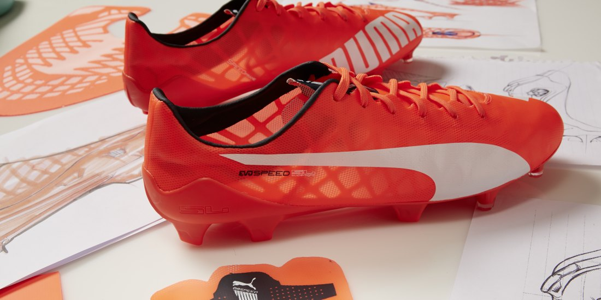
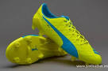
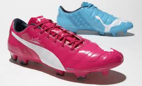
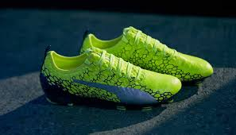
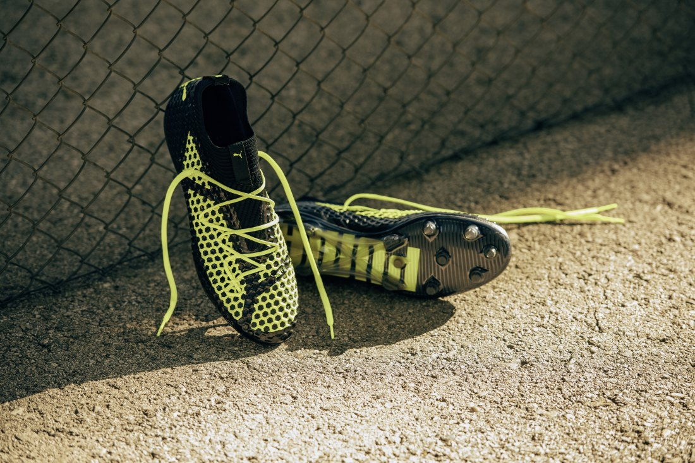
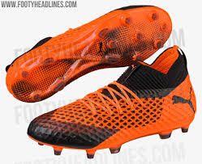

Botines NIKE
Dentro de la marca de botines Puma existen diferentes modelos de la marca. A continuacion se mostraran los distintos modelos con sus respectivas historias e imagen del primer articulo y el ultimo creado
Puma evoSPEED, 2015
Los dos actuales modelos de Puma son evoSPEED y evoPOWER, ambos presentan un interesante equilibrio entre armado y ligereza. Pero quizás los fanáticos de la reducción extrema de peso echaban en falta algún modelo de peso reducido. Ya que, aunque evoSPEED está pensada para jugadores rápidos, el peso de este modelo no es excesivamente reducido. Pero Puma ha movido ficha y rápidamente ha diseñado una evolución del modelo evoSPEED al que le han añadido la etiqueta Superlight reduciendo el peso a la insignificante cifra de 103 gramos para una talla 8.5 UK. Algunos de los mejores jugadores del mundo, incluyendo a Sergio Agüero, Marco Reus, Radamel Falcao, Marco Verratti o Antoine Griezmann serán los embajadores de esta bota en el campo. Así que parece que este modelo evoSPEED Superlight cumple con un objetivo que pocas botas de estas características logran: tener apoyo en campo en los pies de los futbolistas top.

Puma evoSPEED 2015

Puma evoSPEED 2018
Puma evoPOWER 2014
¿Qué objetivo tiene esto? Muy sencillo: el objetivo de Puma es conseguir la sensación de golpear el balón con un pie descalzo. El efecto elástico que le imprimen a la bola un palo de golf o una raqueta de tenis llamó la atención a Puma. ¿Se puede trasladar eso a una bota de fútbol? Tras observar la mecánica de golpeo de un pie descalzo Puma vio que sí era posible.El siguiente paso era armar el pie. Se trata de golpear el balón con la sensación de tener el pie descalzo pero notar que el pie protegido y armado. Para conseguir eso hay dos piezas que son muy importantes. Por un lado el GSF Gradual Stability Frame que aparece marcado en color amarillo en la imagen superior y por otro la espuma interna que protege el pie en el momento del impacto. El GSF se ubica en la zona del puente del pie, la parte más inestable y más expuesta a sufrir lesiones. A modo de columna vertebral actúa para evitar flexiones y torsiones en esta parte del pie.

Puma evoPOWER 2014

Puma evoPOWER 2018
Puma Future, 2018
En primer lugar, tenemos el ya conocido collar de Puma llamado “Evoknit”, que permite un ajuste sin igual gracias a su forma y textura, dándonos como resultado una sensación de compresión inimitable. En segundo lugar, llega la revolución y donde radica la novedad de las Puma Future, el “Netfit”. Nos encontramos con un material sintético, lleno de hoyuelos como los que podemos encontrar en las pelotas de golf, lo cual nos aporta un toque muy suave al balón, así como más grip en contacto con el mismo.Por último, las botas de fútbol Puma Future, también presentan una suela nueva de pebax muy ligera, que incorpora la tecnología “RapidAgility” gracias a la cual consigue mantener un soporte perfecto reduciendo el meso al mínimo. Para el reparto de este soporte mezcla tacos cónicos con tacos laminados, mejorando de esta forma la tracción en todas las aceleraciones que podamos tener en carrera.

Puma Future 2017/18

Puma Future 2018/19
Puma One 2017
Puma quiere dejar claro que en la carrera por ser los mejores creadores de botas, ellos no se van a bajar del “podium”. En un mercado en el que hay que evolucionar y aun más importante, IMPRESIONAR para no quedarse atrás, Puma decide tomar riesgos y deshacerse de dos líneas de botas: evoSPEED y evoTOUCH e introducir un silo completamente nuevo, las Puma ONE.Las botas de fútbol Puma ONE son la perfecta combinación entre el silo de velocidad, evoSPEED y el silo de control y toque, evoTOUCH. Una bota desarrollada con el objetivo de ofrecer el mejor toque, ajuste y velocidad al jugador que se calce estas nuevas botas Puma.

Puma One 2017

Puma One 2018/19